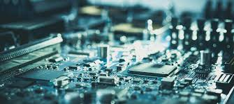

The motherboard is a large printed circuit on which the chipset, expansion slots, plugs, connectors, various ICs, etc. are soldered. It is the fundamental support that houses and communicates to all the other components: microprocessor, RAM memory modules, graphics cards, expansion cards, input and output peripherals. To communicate these components, the motherboard has a series of buses through which data is transmitted in and out of the system.
The integration trend has made the motherboard become an element that includes most of the basic functions (video, audio, network, ports of various types), functions that were previously carried out with expansion cards. Although this does not exclude the possibility of installing other specific additional cards, such as video capture cards, data acquisition cards, etc.
Also, the trend in recent years is to remove separate elements on the motherboard and integrate them into the microprocessor. In this sense, there are currently systems called "System on a Chip" consisting of a single integrated circuit that integrates several electronic modules inside, such as a processor, a memory controller, a GPU, Wi-Fi, Bluetooth, etc. Highlights The improvement in this lies in the reduction in size compared to the same functionality with separate electronic modules. The figures show typical applications, the main board of a computer and that of a mobile phone.
The princial functions a motherboard presents are: